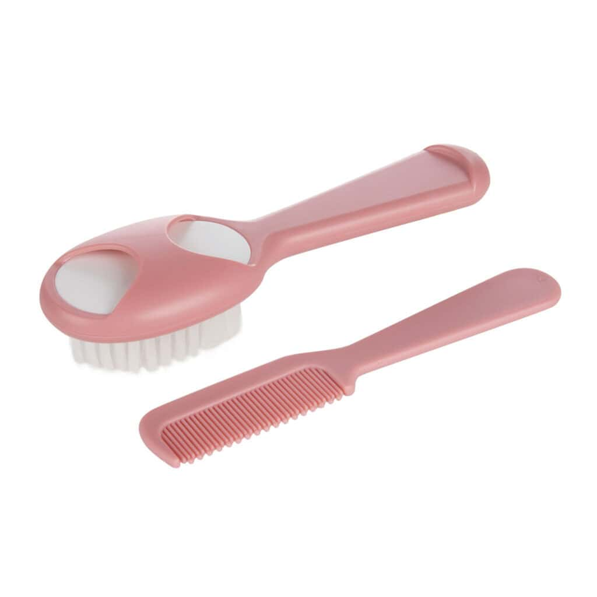

canpol brosse et peigne pour bebe rose 56/160

Description du produit
CANPOL BABIES Brosse et Peigne BLEU ont un ensemble parfait pour peigner les premiers cheveux et masser la tête de bébé. Les dents du peigne sont arrondies pour ne pas irriter la peau sensible de bébé, tandis que les poils synthétiques de la brosse garantissent un soin sûr et agréable des cheveux doux de bébé. La forme ergonomique des ustensiles facilite une utilisation confortable, et une station d’accueil spéciale pour le peigne aidera à garder les accessoires bien rangés. L’ensemble est disponible en trois couleurs pastel.
Caractéristiques
- Prend soin des premiers cheveux de bébé
- Masse doucement le cuir chevelu
- Protége la peau sensible du bébé
Informations du produit
Catégorie : Accessoires de soin
Prix : 22.176 DT
Entretien
- Lavez la brosse et le peigne à l'eau tiède savonneuse avant la première utilisation et après chaque usage.
- Rincez abondamment et laissez sécher à l'air libre.
- N'utilisez pas de détergents abrasifs. Ne faites pas bouillir et ne stérilisez pas le set à la vapeur (au risque d'abîmer les poils synthétiques ou le plastique).
Quantité
Retourner au catalogue